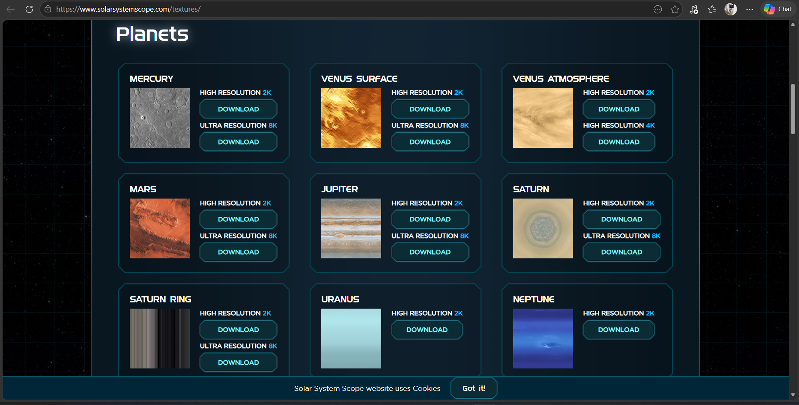
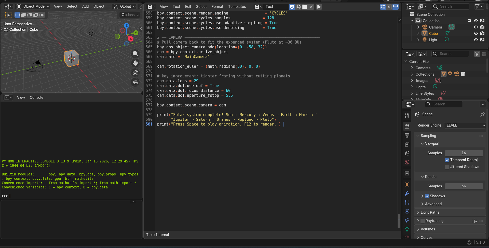
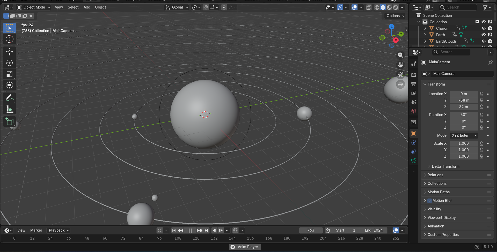
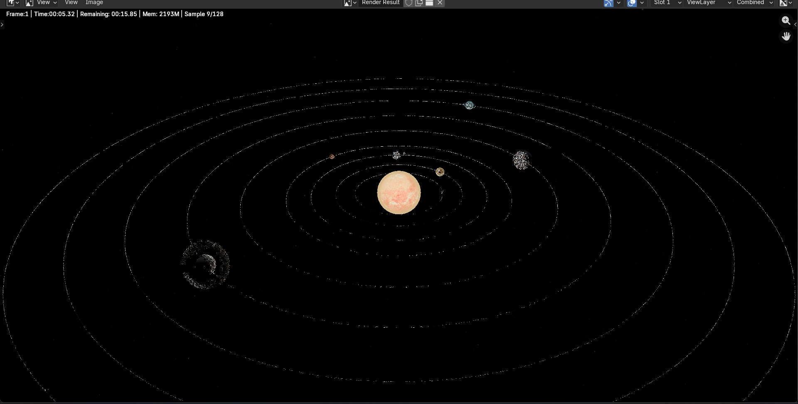
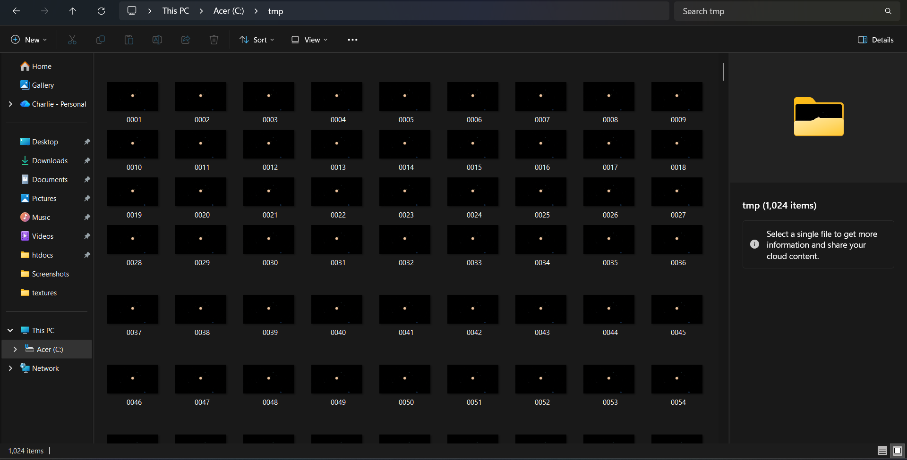
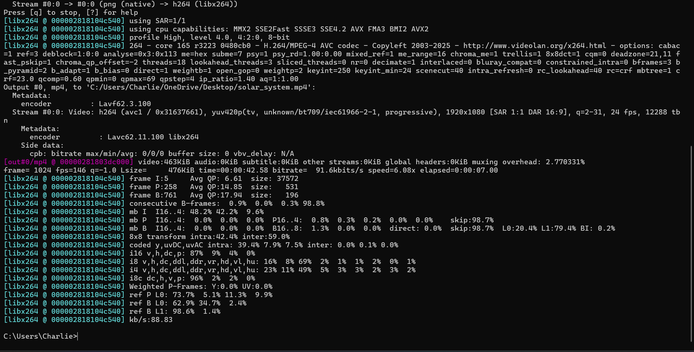

Description
A 3D simulation of the solar system showing planetary orbits, motion timing,
and relative distances to visually explain how planets revolve around the sun.
Built using a Python script inside Blender with realistic NASA textures, atmospheric effects,
axial rotation, and a procedural star field background.
Requirements:
- Blender
- Python
- FFmpeg
- Solar system textures
Earth Age Calculator
Enter your Earth age to see how old you would be on other planets.
Method
Step 1: Download Textures
Go to solarsystemscope.com/textures and download the files needed. Save them all in one folder (e.g. C:/Users/Charlie/Downloads/textures/).

Step 2: Set Up Blender
1. Open Blender
2. Go to the Scripting tab at the top
3. Click New to create a new script
4. Paste the full Python script into the editor
5. Update the texture folder path in the script to match where you saved your textures:
TEX = "C:/Users/Charlie/Downloads/textures/"
Step 3: Run the Script
1. Click the Run Script button (play icon) or press Alt + P
2. Wait for the script to finish — you will see Done! printed at the bottom
3. The scene will now contain the planets, sun, moon, orbital rings, and a star field background

Step 4: Check the Scene
Before rendering, verify everything looks correct:
1. Press Numpad 0 to look through the camera
2. Press Space to preview the animation in the viewport
3. Make sure all planets are visible and moving

Step 5: Render the Animation
1. Go to Render in the top menu
2. Click Render Animation or press Ctrl + F12
3. Blender will render each of the 250 frames one by one and save them as PNG files
4. Wait for all frames to finish — this may take a while depending on your PC

Step 6: Find Your Rendered Frames
Since the output path was not changed before rendering, Blender saved the frames to its default temp folder. Open File Explorer and navigate to:
C:\tmp\
You should see files named 0001.png, 0002.png, and so on up to 0250.png. If they are not there, check the exact save location inside Blender:
1. Go to Properties → Output tab (printer icon on the right panel)
2. Look at the Output path field — it shows exactly where frames were saved

Step 7: Compile Frames into a Video with FFmpeg
Once you have located your frames, open Command Prompt and run:
ffmpeg -framerate 24 -i "C:/tmp/%04d.png" -c:v libx264 -pix_fmt yuv420p "C:/Users/Charlie/OneDrive/Desktop/solar_system.mp4"
